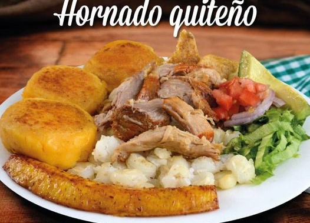

EL HORNADO
El hornado es un ritual especial. Es volver a esos sabores que nos transportan: sabor a nostalgia, a la familia, a las ganas de volver a reunirnos y festejar a Quito. Y es que hay ciudades y fechas que están ligadas a su gastronomía y son inseparables. Por eso no podemos empezar diciembre sin que el antojo de un hornado venga a nuestra cabeza.
El hornado es producto del mestizaje. Fueron los españoles quienes trajeron ocho cerdos ibéricos en el segundo viaje de Cristóbal Colón a América y, aunque sabemos que nació de la tradición española del cochinillo, en nuestra tierra, le dimos su propia forma.
Muchos consideran, especialmente los quiteños—que Sangolquí es la ‘capital mundial del hornado’. Pero si saliéramos de la ciudad, otra sería la apreciación, pues es muy probable que el plato origine de otras provincias. En Carchi, Chimborazo y Azuay también existe todo un culto alrededor del hornado. Y, hoy por hoy, no existe un rincón del país donde no se lo prepare, cada provincia con alguna particularidad donde la creatividad y la variedad de ingredientes locales sale a relucir.